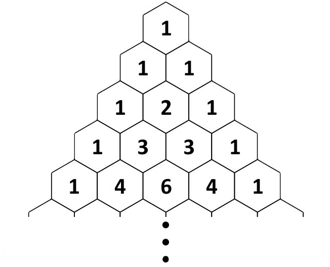

Chapter 18 Induction
Exercise 18.1 Some of these conjectures are false; disprove them by finding a counterexample. Some of them are true; prove them using one (or a combination of more than one) of the methods we’ve met so far.
Conjecture 18.1 : \(8a - 1\) is divisible by \(7\) for any positive integer \(a\).
Conjecture 18.2 : For any positive integer \(a\), \(5^a - 1\) is divisible by \(4\).
Conjecture 18.3 : The sum of two consecutive positive integers is odd.
We have proved this theorem before, but try to prove it again using induction.
Conjecture 18.4 : The sum of the first \(a\) positive odd numbers equals \(a^2\).
Conjecture 18.5 : Any group of students is able to be split up into groups of twos, groups of threes, or a combination of groups of twos and threes.
Conjecture 18.6 : Any group of students greater than two is able to be split up into groups of threes, groups of fours, or a combination of groups of threes and fours.
Conjecture 18.7 : Any amount greater than or equal to 12 soms can be made using an infinite supply of 4-som and 5-som coins.
Conjecture 18.8 : Every negative integer is either even or odd.
Section 18.4 discusses using a proof by induction in the opposite direction (towards negative infinity). See Conjecture ?? for the non-negative version of this.
Conjecture 18.9 : \(2^a > a\) for all negative integers \(a\).
Conjecture 18.10 : Every row of Pascal’s Triangle is a power of \(11\).
The first six rows of Pascal’s Triangle are shown below1, but this conjecture says that every row (till infinity) is a power of \(11\). For example \(1\) is a power of \(11\) (\(11^0=1\)), \(11\) is a power of \(11\), \(121\) is a power of \(11\), \(1331\) is a power of \(11\), etc.

Conjecture 18.11 : \(1^2\), \(11^2\), \(111^2\), \(1111^2\), … are all palindromic numbers.2
Conjecture 18.12 : The product of three odd numbers is odd.
Conjecture 18.13 : The product of any amount of odd numbers is odd.
Conjecture 18.14 : There are no two integers \(a\) and \(b\) where \(a^2 = b^3\), with \(a\), \(b > 1\).
Conjecture 18.15 : The interior angles of the octagon formed by joining the midpoint of each side of a square with each corner of the square are not all equal.
Hint: Draw the picture first!
Conjecture 18.16 : Squares of odd numbers are all one more than a multiple of \(8\).
Conjecture 18.17 : If \(a + b < 15\), then at least one of \(a\) and \(b\) is less than \(8\).
Conjecture 18.18 : There’s no positive integer \(a\) such that the deletion of its first digit divides it by \(2\).
Conjecture 18.19 : There’s only positive integer that is equal to the sum of all the positive integers less than it.
Conjecture 18.20 : Every positive odd integer is equal to the difference of two perfect squares.
Conjecture 18.21 : If an integer \(a\) is not divisible by \(3\), then \(a^2 = 3k + 1\) for some integer \(k\).
Conjecture 18.22 : If \(a^2 = b^2\), then \(a = b\).
Source: https://www.livescience.com/51238-properties-of-pascals-triangle.html.↩︎
A palindromic number is one that reads the same backwards as it does forwards, e.g. \(987789\) and \(434\). Similarly, a word is palindromic if it reads the same backwards as it does forwards, e.g. racecar and noon. Sentences can be palindromic too, usually by ignoring spaces and punctuation, e.g. “No lemon, no melon” or “Was it a cat I saw?”↩︎